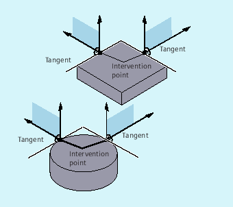
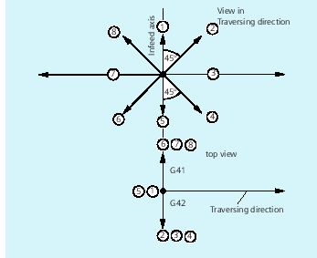

Retraction movement
The following G commands define the retraction movement plane:
-
LFTXTThe retraction movement plane is defined by the path tangent and the tool direction (default setting).
-
LFWPThe plane of the retraction movement is the active working plane selected with G commands
G17,G18orG19. The direction of the retraction movement is not dependent on the path tangent. This allows a fast retraction to be programmed parallel to the axis. -
LFPOSRetraction of the axis declared using
POLFMASK/POLFMLINto the absolute axis position programmed withPOLF.ALFhas no influence on the retraction direction for several axes and for several axes in a linear system.
Programmable traversing direction (ALF=…)
The direction is programmed in discrete steps of 45 degrees with ALF in the plane of the retraction movement.
The possible traversing directions are stored in special code numbers on the control and can be called up using these numbers.
Example:
| Program code | |
|---|---|
| N10 SETINT(2) PRIO=1 ABHEB_Z LIFTFAST | |
| ALF=7 |
With G41 activated (machining direction to the left of the contour) the tool vertically moves away from the contour.
Reference plane for defining the traversing direction for LFTXT
At the point of application of the tool to the programmed contour, the tool is clamped at a plane which is used as a reference for specifying the retraction movement with the corresponding code number.
The reference plane is derived from the longitudinal tool axis (infeed direction) and a vector positioned perpendicular to this axis and perpendicular to the tangent at the point of application of the tool.
Code numbers with traversing direction for LFTXT
Starting from the reference plane, you will find the code numbers with traversing directions in the following diagram.
The retraction in the tool direction is defined for ALF=1.
The "fast retraction" function is deactivated with ALF=0.
 | Caution |
Risk of collisionWhen the tool radius compensation is activated, then:
should not be used, as in these cases, the tool would move to the contour and would collide with the workpiece. |
Code numbers with traversing directions for LFWP
For LFWP, the direction in the machining plane is derived from following assignment:
G17: X/Y planeALF=1: Retraction in the X directionALF=3: Retraction in the Y directionG18: Z/X planeALF=1: Retraction in the Z directionALF=3: Retraction in the X directionG19: Y/Z planeALF=1: Retraction in the Y directionALF=3: Retraction in the Z direction